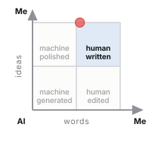

Registro di provenienza · caso 001
Come rendere trasparente il tuo uso dell'AI quando scrivi un contenuto
Di Fabio Chinaglia, 21 August 2026. Ogni intervento fatto scrivendo questo testo — mio e del modello linguistico — è stato registrato mentre accadeva, e poi misurato su due assi indipendenti.

- Pagina di verifica — il testo passaggio per passaggio, i numeri per fase, e cosa il metodo non dimostra
- Registro e tutti i file — 80 eventi concatenati, firma, marca temporale, ancoraggio, e le istruzioni per verificarli
Questo caso è stato riaperto due volte il 23 agosto 2026, dopo che il suo manifesto lo aveva dichiarato definitivo. La pagina di verifica aveva un difetto di resa — la nota finale spezzata in un paragrafo per carattere, per un bug nello script che l'ha generata — e il registro nominava sedici modifiche che nessuno span portava, senza dire perché. Entrambe le cose sono state corrette, e la riapertura è registrata: un evento che la annuncia prima di toccare qualsiasi file, un manifesto nuovo, una firma nuova, e il sigillo del 22 agosto conservato accanto. La seconda riapertura ha rifatto il documento pubblicato, che portava una radice battuta a mano e mai sigillata, e ha tolto le rese dall'elenco firmato: una resa si rigenera da ciò che è firmato, e congelarla obbligava a riaprire il caso ogni volta. I numeri non sono cambiati.
Radice della catena e9b049198f2849837d8c12057e516ade674316e12efd59b876a1525b5276272b
La catena dimostra che nessun evento è stato alterato dopo essere stato registrato.
Non dimostra che il registro sia completo: nessun sistema volontario può
farlo, e il registro è compilato dal modello sul proprio contributo. Il valore di
questo registro non sta nella prova: sta nella responsabilità che mi assumo
pubblicandolo, e nel fatto che è ispezionabile.